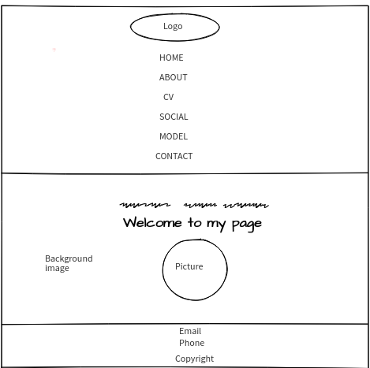

Web development is the process of developing websites that are accessed through the internet. Website is the collection of related World Wide Web pages to a particular thing. In this 21st century, we get to learn about almost everything through the internet and websites act as a media for the people to learn about those things.So, how is the webpage made? It is made using HTML(Hyper-Text Markup Language) and for designing the webpage, CSS(Cascading Style Sheets) is used.
Here, the assignment given is also to create six web pages, index.html, about.html, cv.html, social.html, models_gp.html and contact.html using HTML5 and CSS. The first page, index.html is the landing page which should be accessed on Github. The second page, about.html includes my biography, picture and aspirations as a developer. The third page, cv.html includes my curriculum vitae like personal information, qualifications and experiences till date. The fourth page, social.html includes my social media accounts like facebook, instagram, google-plus, linkedin and github. The fifth page, models_gp.html is about the report of the assignment which includes introduction, experience, UI design and conclusion. The last page, contact.html includes the contact form through which people visting my webpage can contact me and the map of my location. The main thing to remember was to create the footer for all the pages.
Cover Page

Table of Contents
- 1. Introduction
- 2. Group Discussion
- 2.1. Reference websites for my webpage
- 3. Experience
- 4. UI Design
- 4.1. Wireframes
- 4.2. Code Validation
- 5. Conclusion
- 6. References
1. Introduction
2. Group Discussion
Before starting the assignment, a lot of reasearch on creating and designing the webpage was done. A group with the peers was formed to discuss the assignment, analyze all the requirements and find out a good design of website. It was fun and fruitful to discuss with the peers. New ideas, design, properties of CSS were learnt and shared with each other. The confusions were clarified and the workload was also lessened. Overall, it was a great experience working in a group.
2.1. Reference websites for my website
Designing a website is not everyone's cup of tea. So, in order to design a good website, I searched for the reference websites for my website. I found the following websites which are simple for a beginner to take as a reference:
3. Experience
Web designing seemed quite interesting for me since I got to know about it when I was in +2 level. In the first term, we got to learn about three topics, Github, HTML and CSS. Github is the world's largest online community where people learn and exchange new ideas. HTML is a markup language used to create the webpage and CSS is used to make the webpage look attractive. After joining the college in Bachelor's Level and learning about it for 12 weeks, I was quite interested in making my own website and I was very pleased to get the assignment to create my website. During the tutorials, I was always excited to learn new things about the web-designing and trying it and becoming successful to learn about it always brought a smile on my face and boosted my confidence.
At first, it was quite easy to create the homepage using navigation bar and footer but after the background image was added, it turned to be very difficult to maintain the height to the full screen of the website. After trying for few days and discussing it with my peers, I tackled through the problem. I completed all the webpages without any other problems but when I started making those pages responsive, it really panicked me a lot. I tried a lot to make the pages responsive but I failed. So, I asked my peers to help me and after several tries, we succeeded. Likewise, with the first term learning and experience, I crreated my own website.
4. UI Design
UI Design is the design of user interface to make the user's interaction simple and efficient. It reflects our creativity an understanding.
4.1. Wireframes
Wireframe is the visual guide representing the skeletal framework of the website. The following are the wireframes of my websites:
- Wireframe of the landing page:
- Wireframe of the about page:
- Wireframe of the CV page:
- Wireframe of the Social page:
- Wireframe of the Contact page:
The following are the responsive wireframes of my websites :
- Responsive Wireframe of the landing page: 
- Responsive Wireframe of the about page:
- Responsive Wireframe of the CV page:
- Responsive Wireframe of the Social page:
- Responsive Wireframe of the Contact page:
4.2. Code Validation
I checked my HTML5 code and CSS in the W3C Markup Validation Service and the W3C CSS Markup Validation Service respectively. The following are the screenshots of the code vaidation of each pages:
- Code Validation of the landing page:
- Code Validation of the about page:
- Code Validation of the CV page:
- Code Validation of the Social page:
- Code Validation of the Contact page:
- Code Validation of the CSS page:
5. Conclusion
It was fun to create the webpages but it was really difficult to make the pages responsive. Many new CSS properties like flex properties, different animations, etc were learnt. Web designing helps to enhance our creativity and understanding. Overall, I enjoyed a lot doing the assignment.
6. References
- Available from https://www.pexels.com/search/beauty/ [Accessed on 13thapril]
- W3Schools[1998] [online] Available from: https://www.w3schools.com/ [Accessed on 15th April,2018]
- W3Schools[1998] Responsive image tutorial[online] Available from https://www.w3schools.com/howto/howto_css_image_responsive.asp [Accessed on 21st April 2018]
- Prakash[2015], Pure css popup box[online]. Available from https://codepen.io/imprakash/pen/GgNMXO [Accessed on 22nd April,2018]